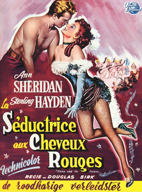
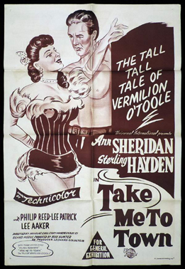
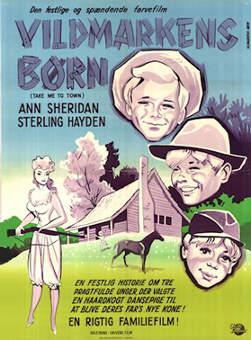

Take Me To Town
Ann Sheridan
Phillip Reed
Lee Aaker
Dustey Henley
Forrest Lewis
Ann Tyrrell
SYNOPSIS
Vermillion O'Toole needs a place to hide out after escaping from the law (that wanted her for something she hadn't done). So she accepts the offer of three little boys to stay with them while their father is gone logging (even though he's a preacher on Sundays). She doesn't know they are hoping she'll marry their father and save him from marrying a prissy town woman.
The community is outraged but she is nothing if not determined and sets out to stake her claim. This involves fighting a bear, getting rid of an old lover and turning out to be an indefatigable fundraiser for the construction of a new church. It's a comedy so everything comes out all right in the end.
One very interesting note on this movie is that the preacher actually lives his life by Biblical principles, not condemning Vermillion but encouraging her subtly to follow the good he knows is in her heart. Sterling Hayden and the script portray him as a Christian who is neither a bigot nor a milquetoast.
Douglas Sirk originally shot a darker, sadder ending, but the producer, Ross Hunter, substituted a happier one. The film was Ross Hunter's first as a producer. The one-time actor was working as a teacher when Ann Sheridan suggested he turn to producing. He worked without salary at the Motion Picture Center to learn producing, then managed to set up the film at Universal.
Sheridan's normal price was $475,000 per film but she agreed to $100,000 to work with Hunter. "It was Annie who really gave me my first break" later recalled Hunter "She was a very great lady." The $460,000 film budget included 25% studio overhead. He also said the film "was when he learned how to put the money on screen" as a producer.
Richard Long, who has a horseback-riding scene with Stanwyck in the film, would later play her eldest son in all 122 episodes of the TV western series The Big Valley (1965-9).
In 1960, Hunter was reportedly working on a Broadway version Vermillion. It was never made.


